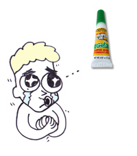

| SON |
|
My SON esteems Western glue.
 |
| とうと*い |
noble or holy
NP
★★★☆☆ |
| 尊敬語 |
formal Japanese
★★★☆☆
F
the formal Japanese you use when you are addressing your superiors. |
| 尊敬 する |
respect
★★★☆☆
to look up to or respect someone. (BOOBOO: it's not ok to tell someone directly, 'I 尊敬 you very much!' - you'd say it about a third party) |
| 男尊女卑 |
sexism
★★☆☆☆
sexism (literally, and I love this； 'men - esteem - women - despise') |
| Meaning | Hint | Radical | |
|---|---|---|---|
| 専 | specialty | TNT |  |
| 尊 | esteem | SAKE | 酒 |
| 甫 | UTILIZE | 用 |
(UTILIZE)
His specialty is TNT, but I esteem his ability to hold his SAKE - he can drink a pint and still UTILIZE a unicycle!
|
pretentious or arrogant
気取りや 尊大 いい気 になってる いばってる xxx振ってる 自惚れ 仰々しい 横柄な |
|
respect
尊敬 拝む 崇拝 憧れ |
 KANJIDAMAGE
KANJIDAMAGE